LINKS
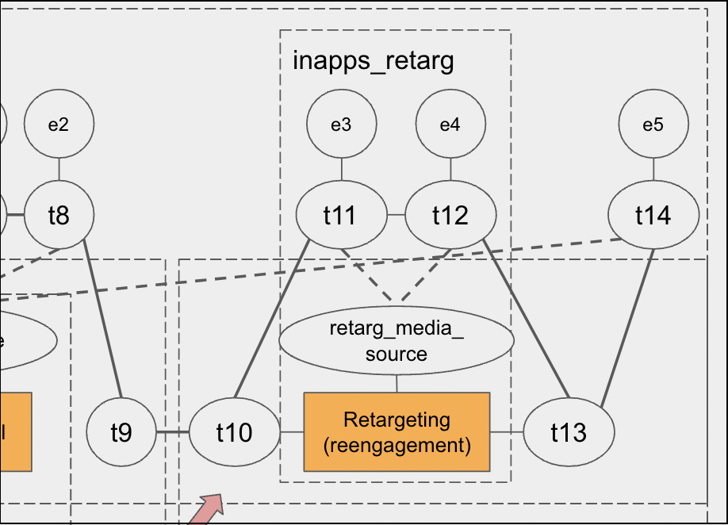
February 21, 2022
There are at least two trajectories of user-journey tracking: within a product, which is the scope of product analysis, and within traffic channels, which is within the scope of marketing analysis. The latter is called a multi-channel funnel. Nowadays, there are web and app promotions, so there are three multi-channel funnels: for the web, for apps and for a combination of these. Continue reading
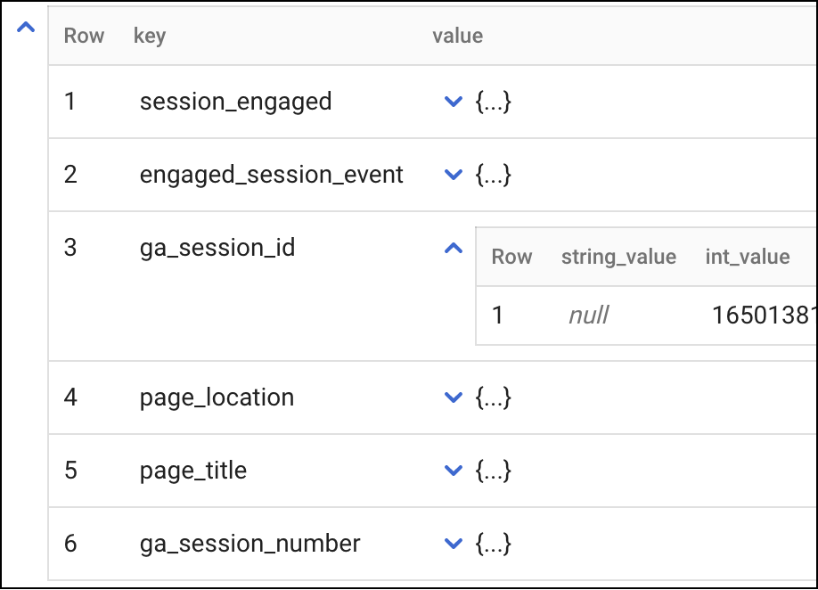
April 18, 2022
The session has always been one of the keystones in Google Analytics, and while it will also continue to be one of the essential concepts in GA4, the session has evolved. Let us take a closer look at these changes so that you can better understand GA4 metrics. Then, you will be able to adopt these metrics to evaluate your website and apps’ performance more effectively. Continue reading
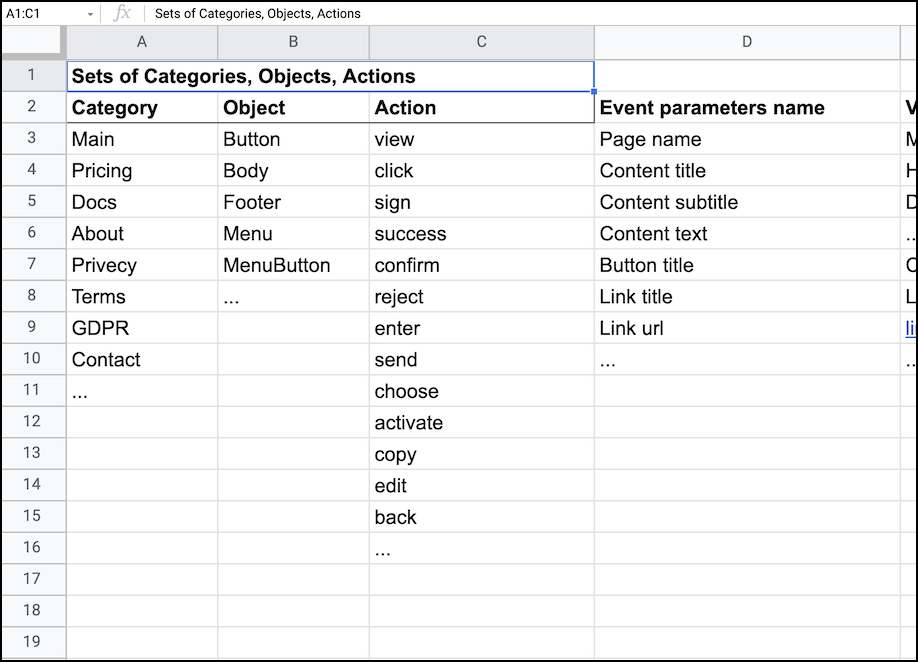
April 15, 2022
Starting from July 1 2023, Google has claimed that there will no longer be any Universal Analytics (UA). Instead, you will have to use Google Analytics for Firebase or, shortly, GA4.If you are a newbie in web analytics or you are transferring events for UA to GA4, we recommend that you follow our simple instructions, considering the main restrictions of GA4. Continue reading
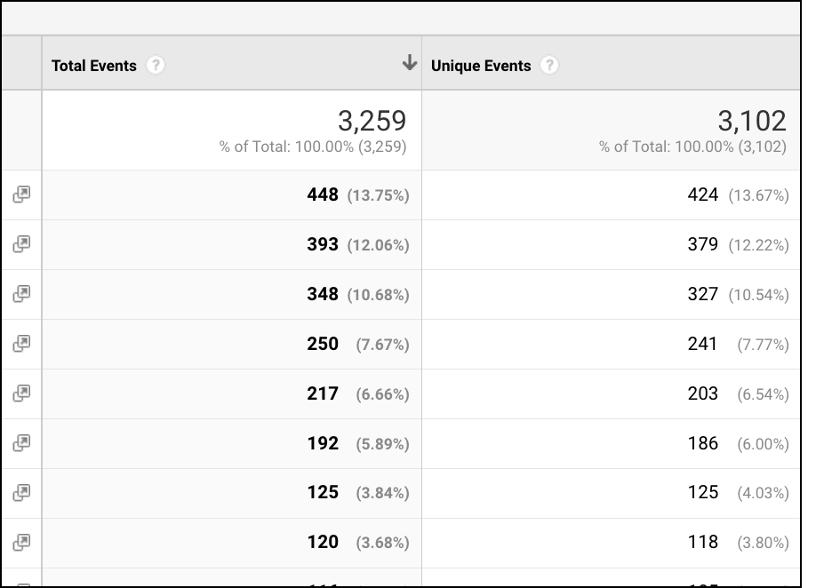
April 1, 2022
Events in Google Analytics, in both Universal Analytics (which will be deprecated next year starting from July 1, 2023) and in Google Analytics 4 (which will be a replacement), are indispensable tools for measuring various activities on website pages and across applications. Continue reading
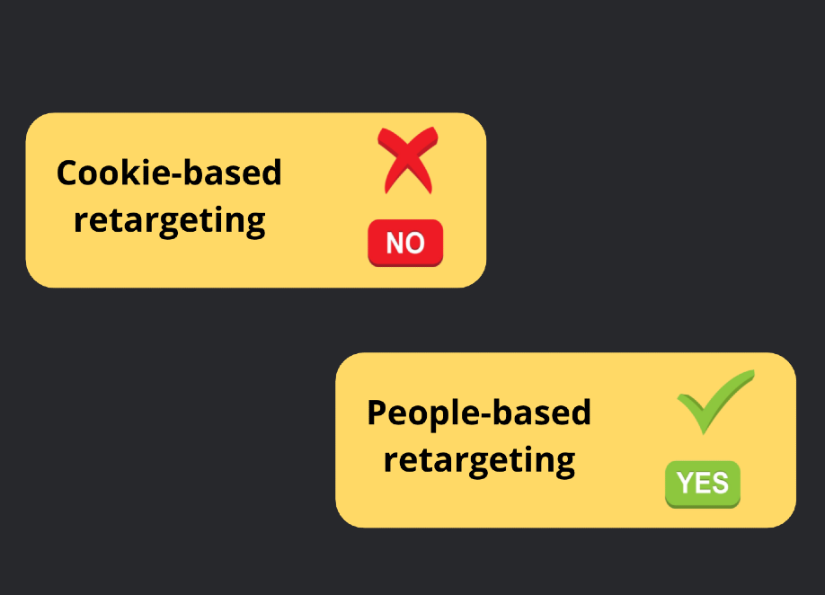
December 12, 2021
I can’t wait to share with you important and exciting updates about digital advertising and analytics in a world without third-party cookies.The digital landscape is changing rapidly, so today we’ll take a look at the most significant trends and expectations and will discuss what we should do to prepare as best we can. Continue reading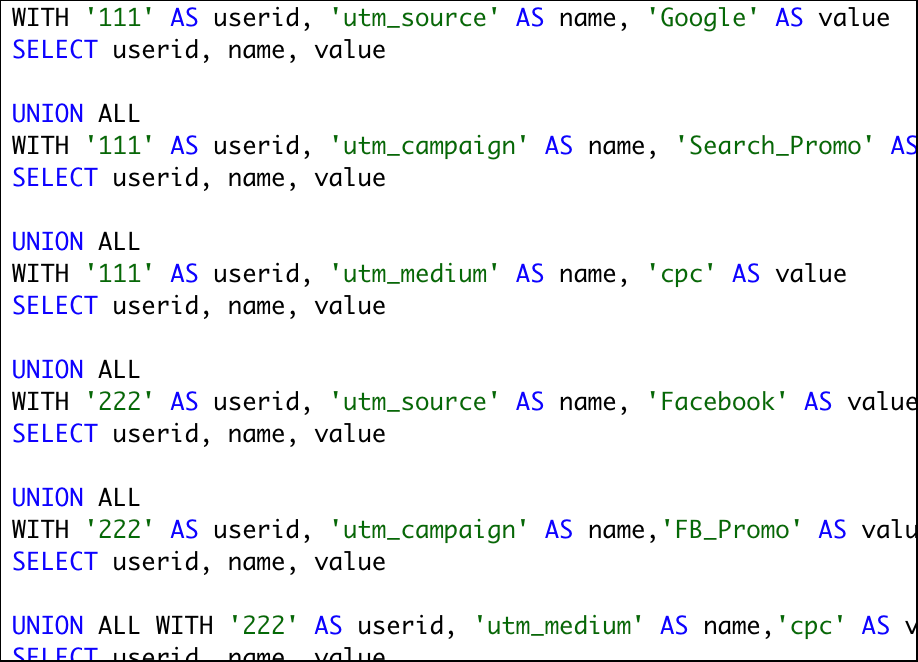
August 14, 2021
If you have a database, including a table with raw data, where the first column is the user-id/date and the two others are the name and value of your URL parameters as follows Continue reading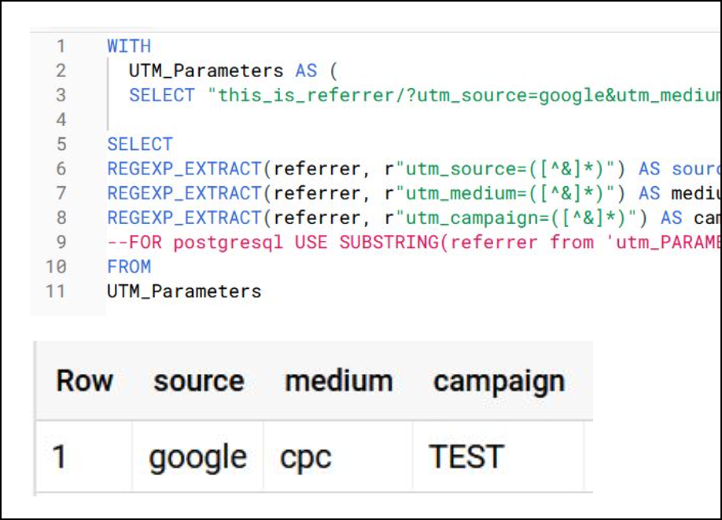
July 28, 2021
Parsing HTML with regular expressions is a really bad idea, but if you are using a tracking template for your ads, I’m sure your URL has well-defined, structured UTM parameters. Therefore, this method may actually be used in this case. Continue reading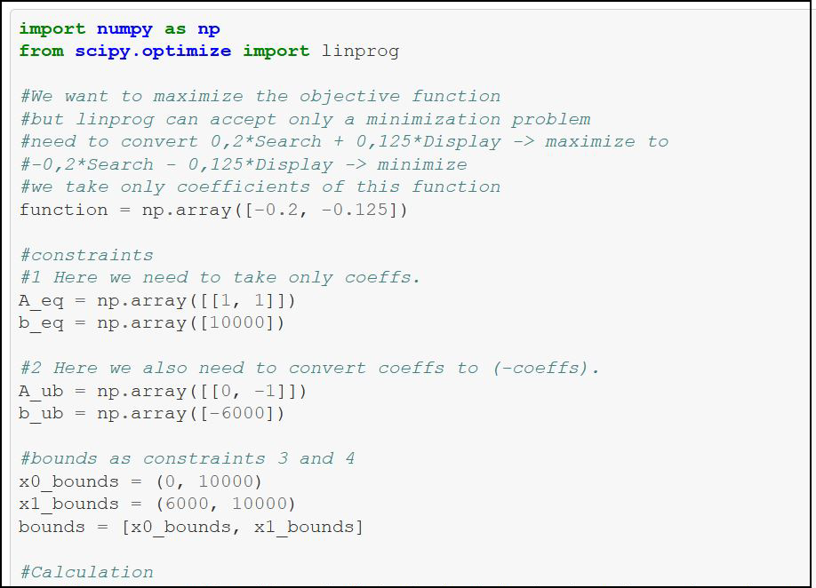
May 28, 2021
Budget allocation is definitely a real headache for marketing. First of all, it is about attribution models, which try to represent as accurately as possible the real contribution of each marketing channel in terms of converting customers. Secondly, a business may require a spend that is more (or no less) than some amount of money on the channel which is not considered as being a very good performer. Continue reading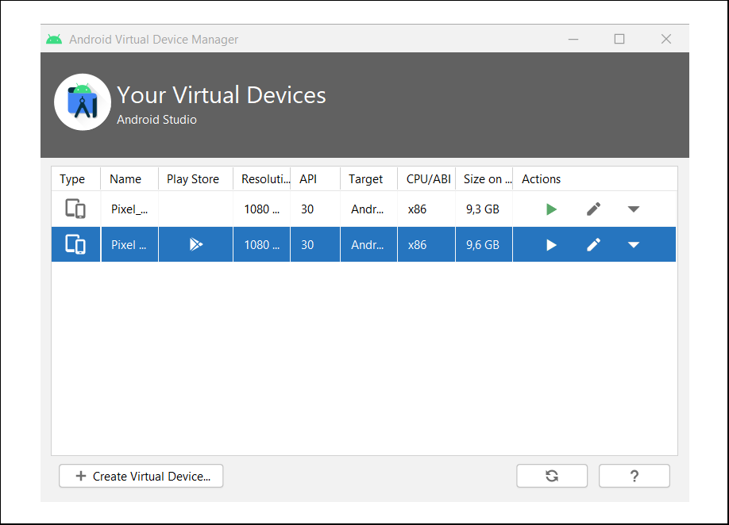
May 24, 2021
Before starting to advertise your mobile app using Google App Campaign, you must be sure that all your app conversions, based on events, are tracked by Firebase. The way the marketer can check it is similar to debugging events at Google Tag Manager, but it’s a little bit trickier. You see, you need to have an emulated Android device, connected to Firebase. Continue reading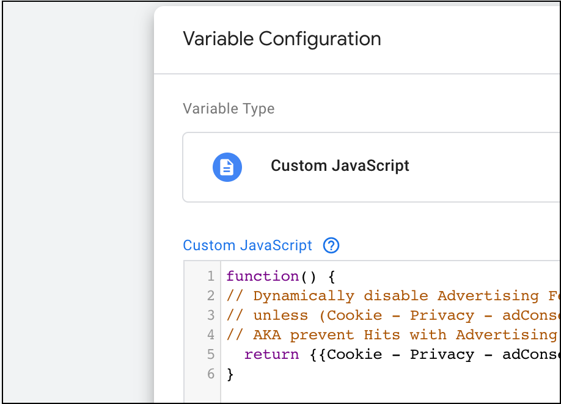
October 17, 2020
Advertising Features significantly increase functionality in GA and are necessary if you want to have the opportunity to remarket your website visitors using Google Analytics data. The main advantages of these Advertising Features are as follows: Continue reading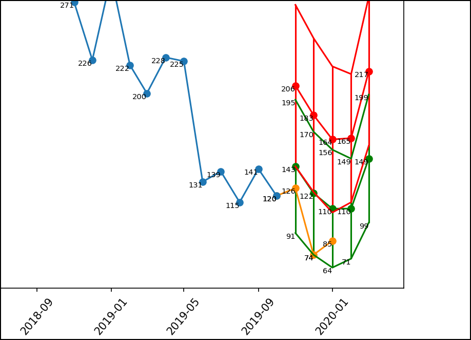
August 24, 2020
The A/B test may be used to ascertain whether there is any effect on the audience by implementing certain changes on your website, app, etc. But occasionally, there is an urgent need to change, for example, the websites’ flow at once, affecting all users. Or it may be necessary to enlist the help of a digital marketing agency too and allow it to fully control one or even all source channels. Continue reading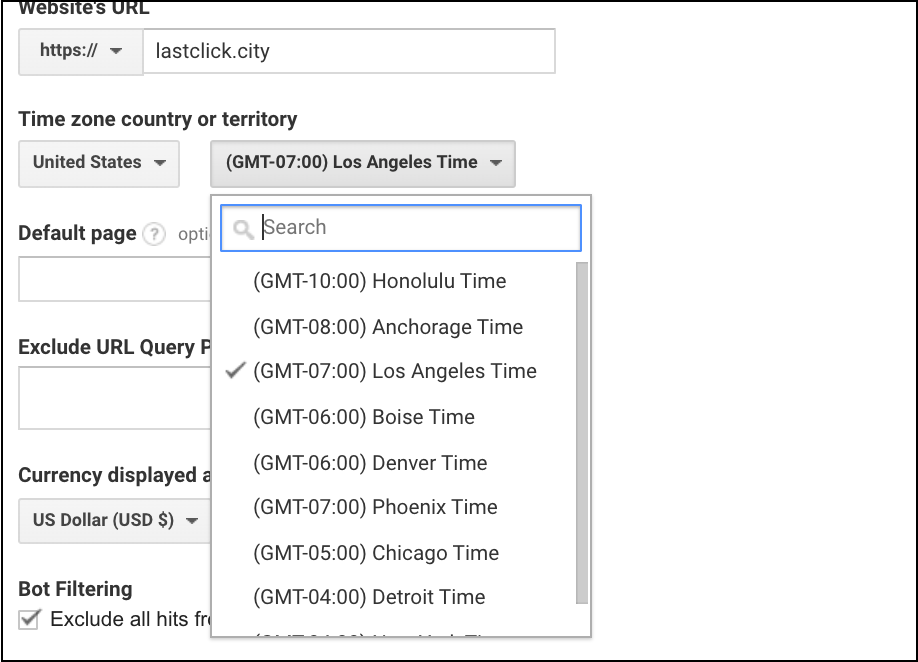
July 29, 2020
A session is a crucial concept of the Google Analytics data hierarchy. Understanding sessions is essential for web analysts of any level. In this article, I will list every case when a new GA session restarts, including some little-known ones. Continue reading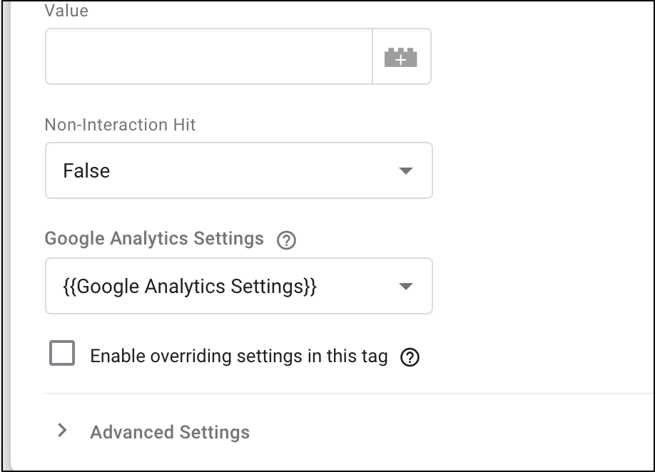
June 30, 2020
Before evaluating your website efficiency with the bounce rate, define your website goals clearly. Does your goal involve multiple-page visits or events (in other words, multiple requests to the GA servers)? If it doesn’t, a high bounce rate will probably be acceptable. Continue reading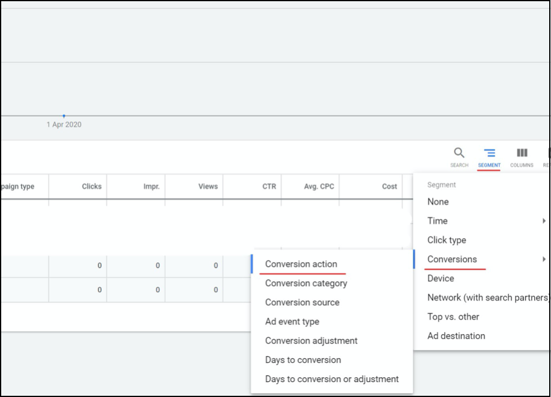
June 25, 2020
Welcome to the black box Google Ads Application Campaign. It is easy to set up and takes just 5 minutes: 2 minutes for campaign settings and 3 minutes to write some headlines and descriptions. Google claims that it is now super efficient and that it uses multidimensional signals to find your users etc. Continue reading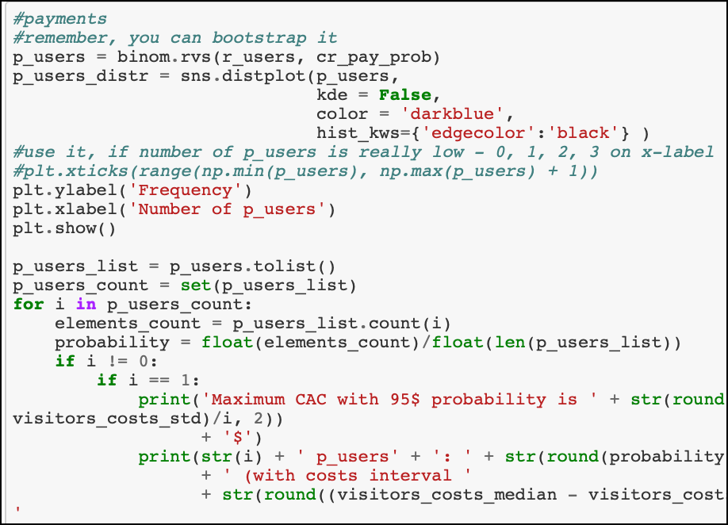
June 14, 2020
Among the challenges faced by online marketers, are the expected results from paid campaigns. An answer to these challenges is often a media plan that is based on experience, expertise and a quick superficial analysis of the business area. That’s good, but it is not sufficient, as it doesn’t provide the range of expectations in a specific sense. Continue reading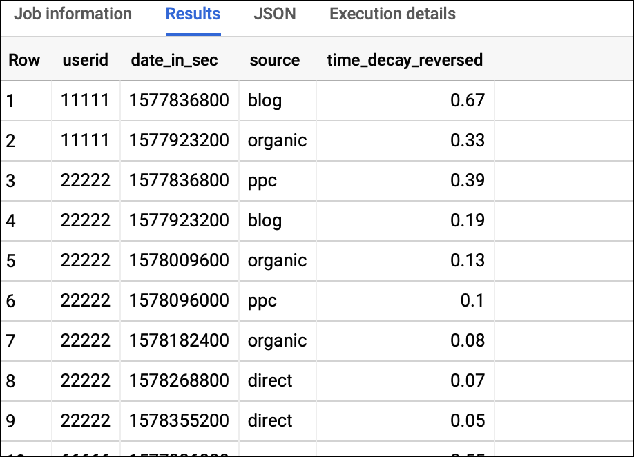
May 31, 2020
You know, one of the main reasons why this blog is named like the old-fashioned attribution “Last Click” is that I and my co-host started our marketing careers when this attribution – like other classical ones such as “First Click” – was the only one we could use. Continue reading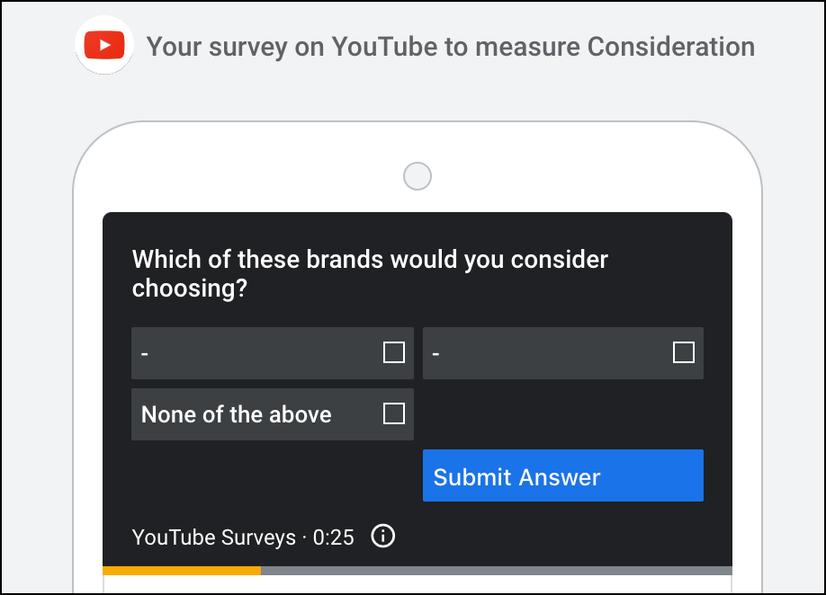
May 27, 2020
YouTube’s brand lift measurement is a powerful tool that helps users to understand how their video ads are influencing audiences; whether they have increased awareness across the target group or boosted purchase intent. The brand lift study (BLS) is one of the few tools which make it possible to better understand how video campaigns contribute to overall brand awareness. Continue reading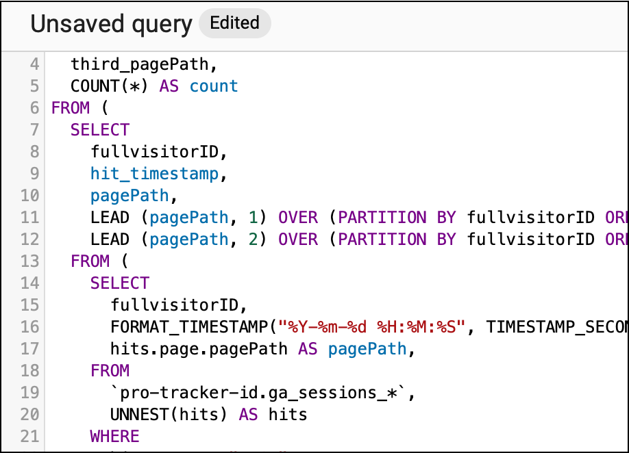
May 7, 2020
BigQuery export for Google Analytics is one of the most powerful tools, which can show you up to three of the steps preceding goal completion. But, to my bewilderment, there isn’t an option to obtain a similar report which can show you the reverse top paths to a particular page. Such reports can undoubtedly be useful in many cases when a user’s journey to a specific page needs to be analyzed. Let’s try to build it using BigQuery. Continue reading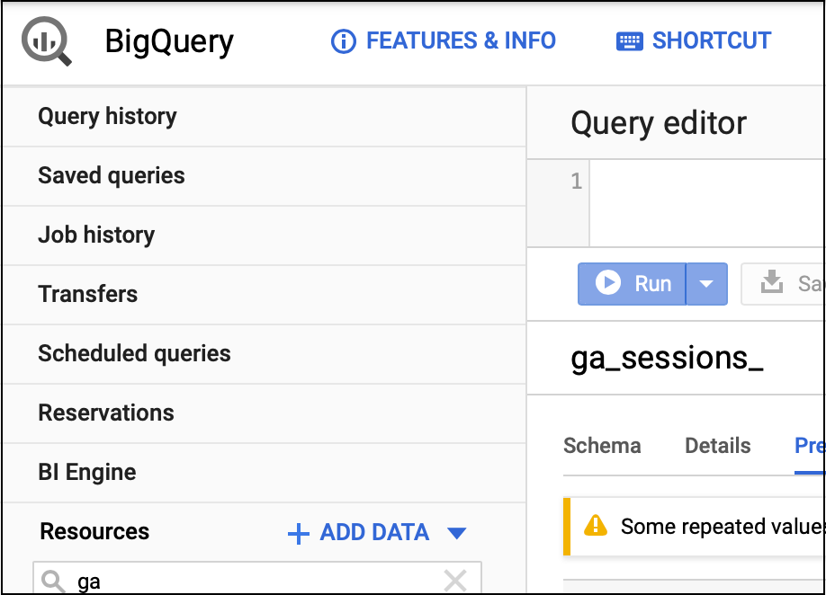
May 6, 2020
BigQuery export for Google Analytics is one of the most powerful tools you can use to understand and get the most out of your data for proper marketing and business decisions. But what exactly makes BigQuery so impressive? And why should you consider investing your precious time and effort in the export configuration? Continue reading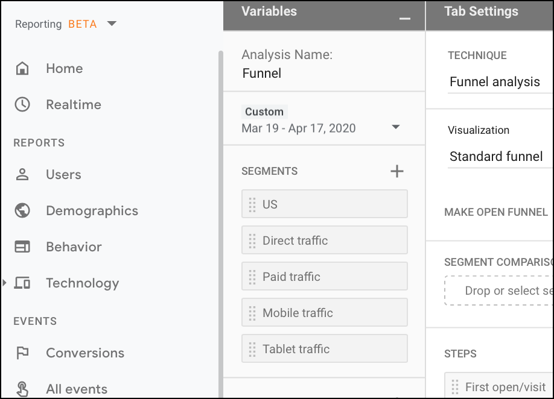
April 24, 2020
There are a few ways to create an event funnel in Google Analytics. The first is the default events flow report but everyone who has tried this report will know that it’s only suitable for the superficial analysis of small resources. When you work with data of a significant size it’s impossible to avoid sampling and therefore, it is challenging to analyze certain events. Continue reading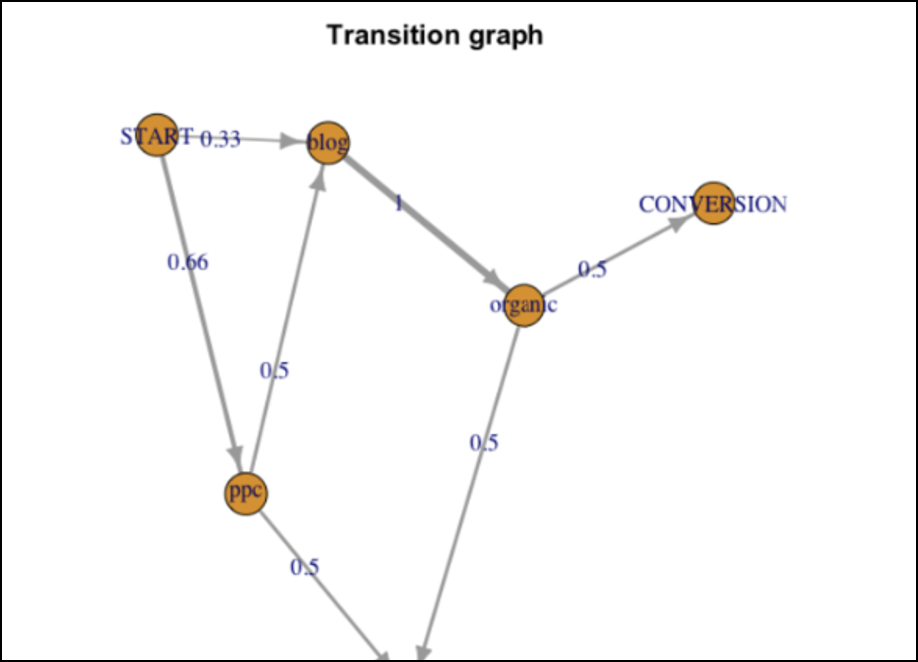
April 10, 2020
Accurate attribution is crucial for marketing and business. And today we will implement the Markov Chain attribution model, using python, to evaluate the contribution of channels’ performance to overall marketing activities. Continue reading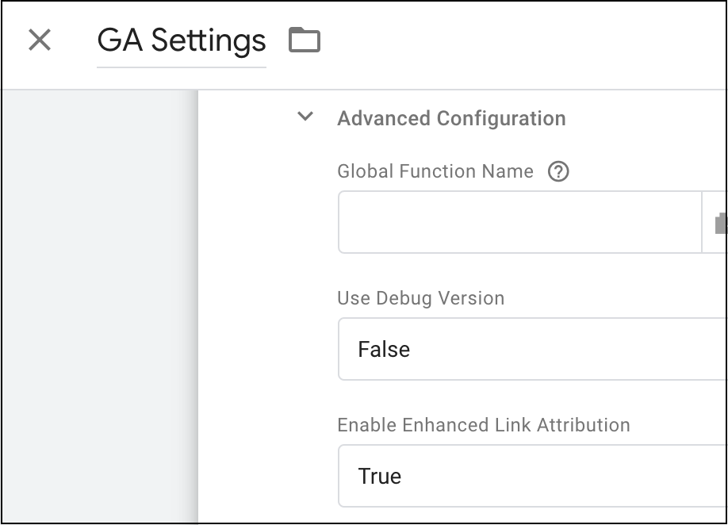
April 8, 2020
Google Analytics does not provide its users with heatmaps, but it does enable a site visitor’s behavior to be analyzed using Page analytics plugin for Google Chrome. Page Analytics is not a heatmap, but it shows the clicks distribution between different links on the analyzed page. Continue reading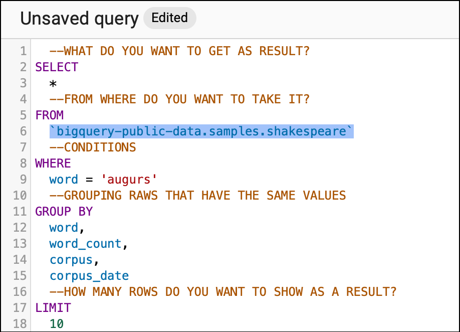
March 26, 2020
This might be your first guide to SQL and BigQuery. If so, that’s cool, but if it isn’t, we hope that our guide will provide clear explanations and help you understand things better. The goal of this guide is to help you become more familiar with SQL and BigQuery as quickly as possible so that you can make simple queries by the end of it. Continue reading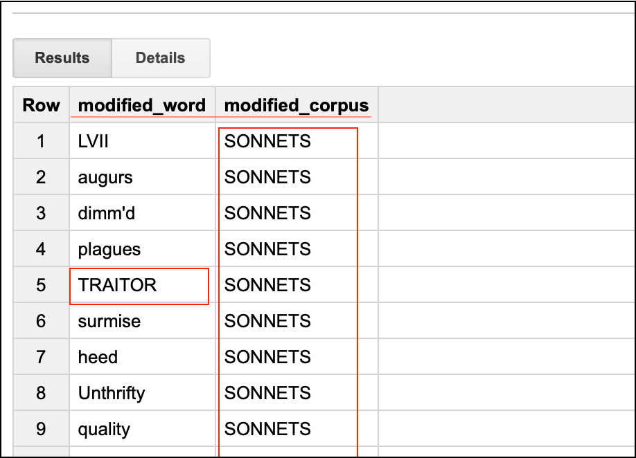
March 8, 2020
BigQuery has an option called User-Defined Functions, which helps users to maintain data as they want, row by row, using JavaScript. You will only want to use this if you cannot do something with data by standard BQ methods. Continue reading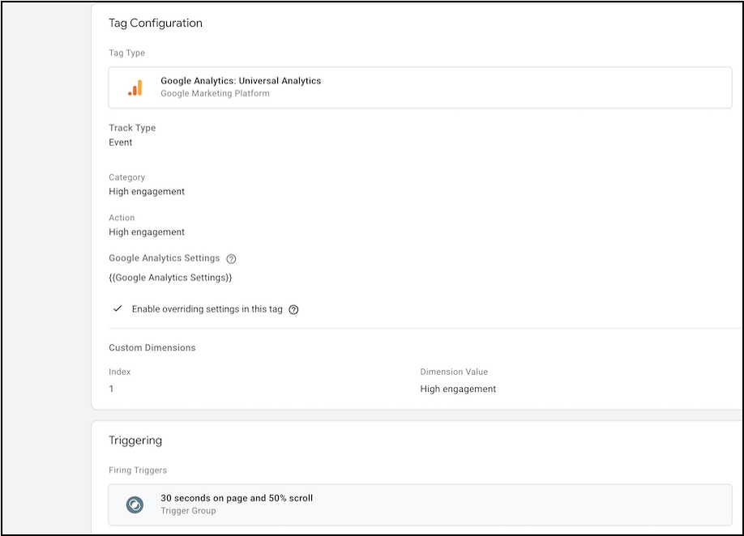
February 22, 2020
Google Analytics provides us with a large number of useful dimensions that help us understand what is happening on the website. But to make full use of GA opportunities, you should definitely use custom dimensions. Only custom dimensions will allow you to get a lot of data that are not tracked automatically, e.g., you can export some information from your CRM or add some domain-specific dimensions. Continue reading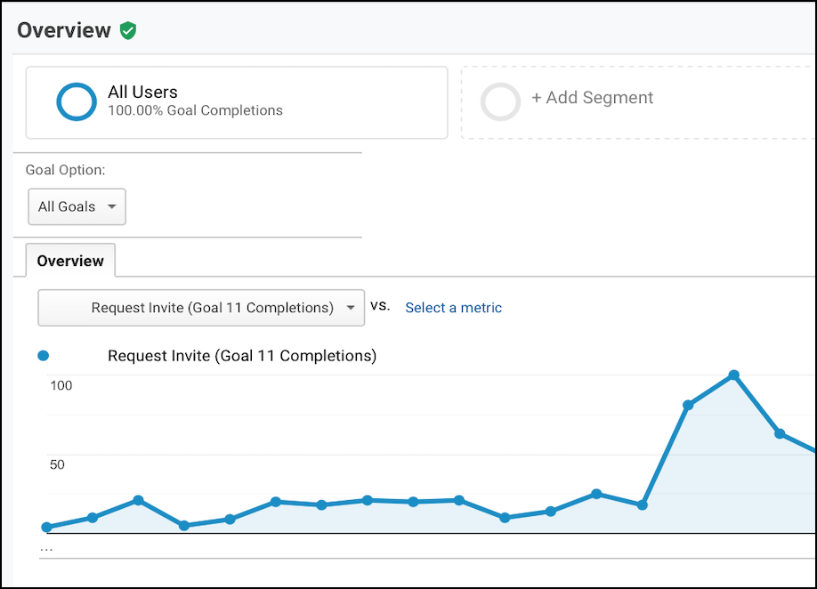
February 12, 2020
Quite often we place all our hopes on digital marketing campaigns but sometimes, they just don’t work out the way we want them to. And pretty often the exact reasons for this aren’t obvious. Today I want to share my list of why I think your digital campaign may fail. Continue reading
October 20, 2019
Yandex.Direct, or Direct for short, is an ads platform for posting search and display advertising in the Yandex Search Engine and the Yandex Advertising Network (YAN, or RSYA in Russian). Continue reading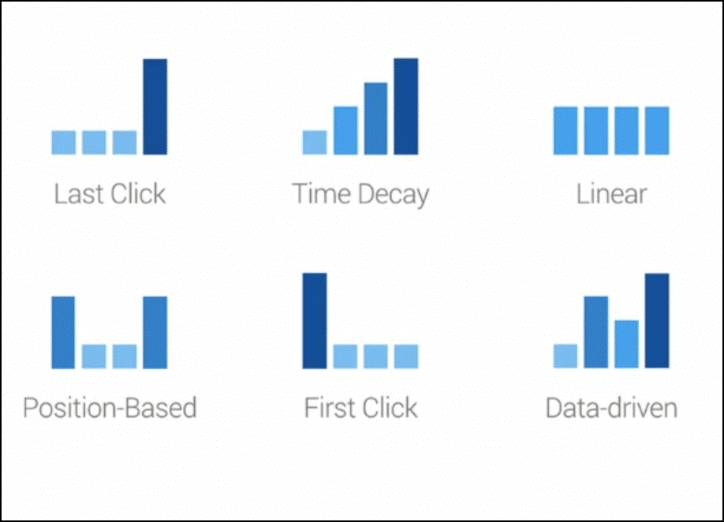
October 2, 2019
To accurately evaluate marketing efforts, proper attribution is crucial. These days, increasingly diverse approaches are being suggested by vendors to help advertisers in this domain gain deeper insights into how different touchpoints, channels and campaigns contribute to overall marketing outcomes. Continue reading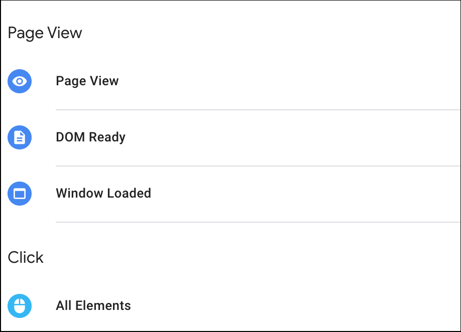
September 17, 2019
When configuring Google Tag Manager triggers and tags, it’s crucial to understand when they will fire, so that all the necessary tracking will be tied with the right events. Three main GTM events to which you can tie your trigger are: Continue reading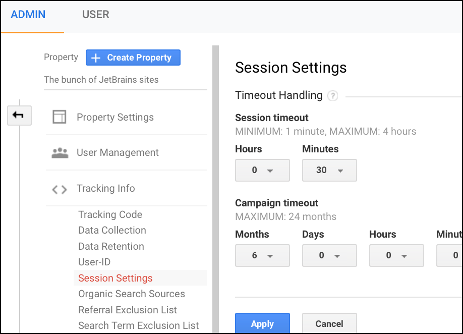
August 16, 2019
Usually, Google Analytics implementation includes a few steps such as testing the tag, configuring the settings in the Admin panel and setting up all necessary permissions and integrations. It can be quite easy – especially if you are new to GA – to miss something important. Continue reading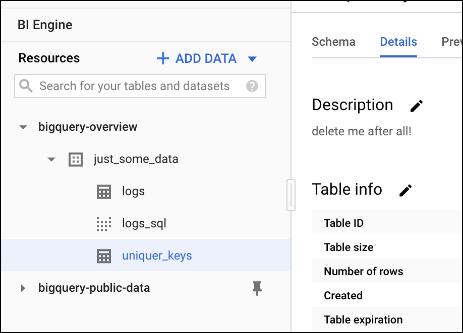
July 2, 2019
These instructions will help you to get started with the BigQuery interface. All you need to try it is a Google account: that’s it! BigQuery, in a nutshell, is cloud storage that may include data from many data sources, such as Google Analytics, Google Ads, Salesforce, etc. Continue reading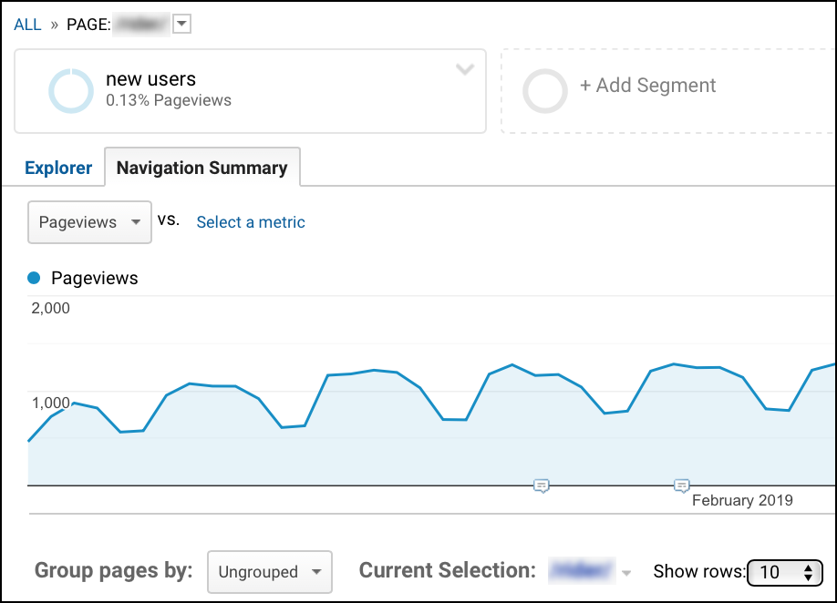
June 28, 2019
Suppose that you have a particular landing page on your website, and you want to understand how it works for new users: how often they abandon the site after visiting this page or, for those who continue, which pages they visit afterwards. You could try to find these data in Google Analytics – it appears that the Navigation Summary report was invented for exactly this purpose and, to some extent, this is true. Continue reading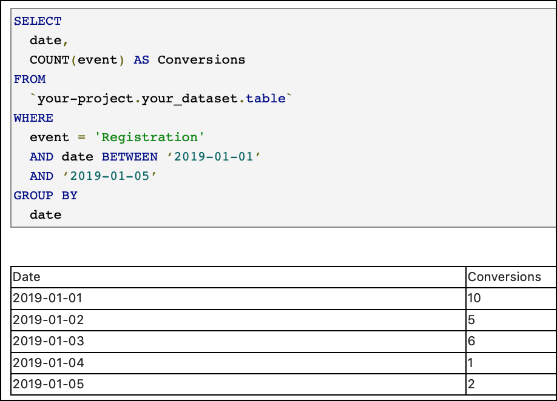
June 22, 2019
Let’s say that you want to know the conversion amount in a specific date range for streaming in BigQuery: the total amount for each day and the total for all days as well. You could do this by making either two queries resulting in two tables, or one query resulting in one table. Continue reading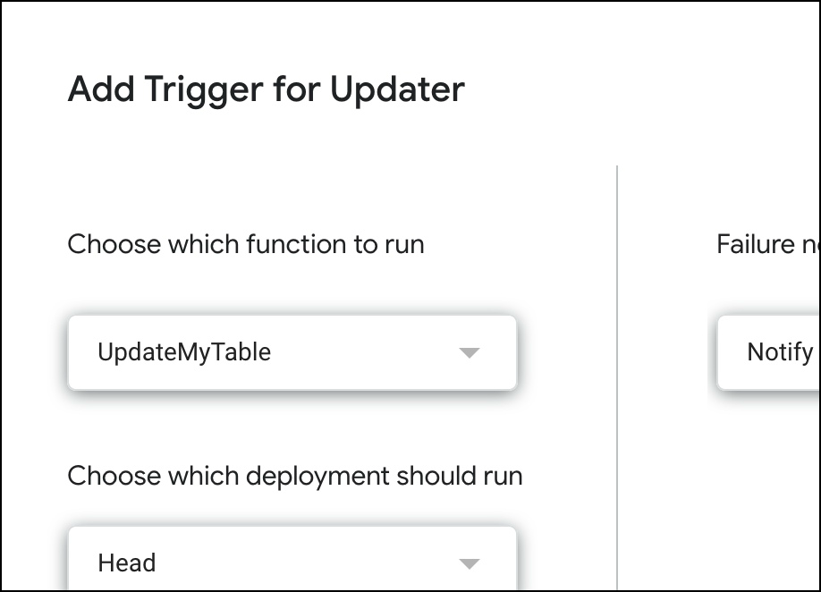
June 21, 2019
Let’s assume you have a big table with raw data, for example, from Google Analytics. You make a query for data processing and obtain a more informative table. The question is how to update it on a daily basis and append new data from the main table. Continue reading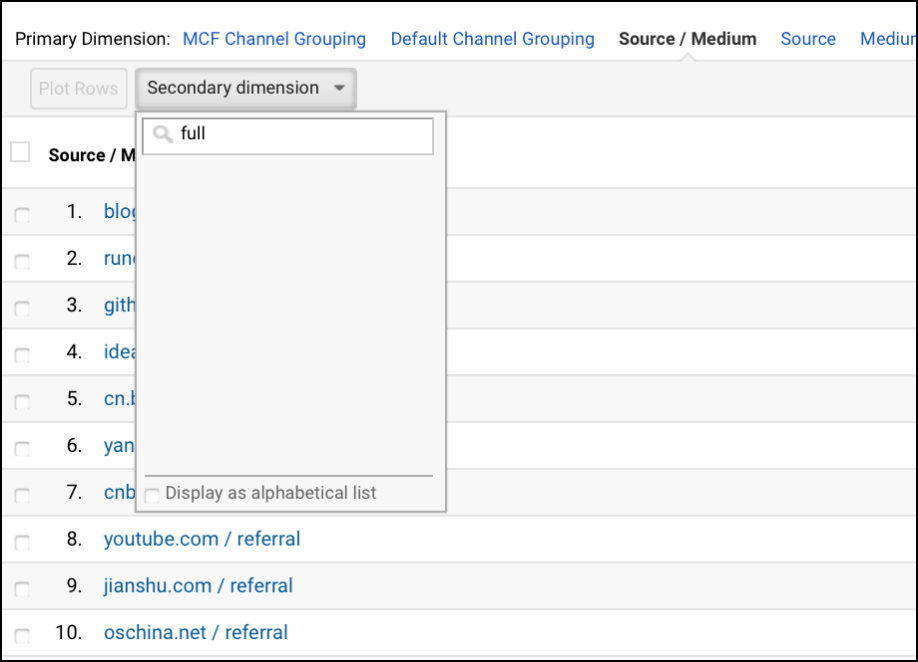
June 03, 2019
Let’s imagine that someone has posted a few articles that lead to your website, and you are able to find the data about this traffic source under the /referral section (because the links posted are https, luckily). Continue reading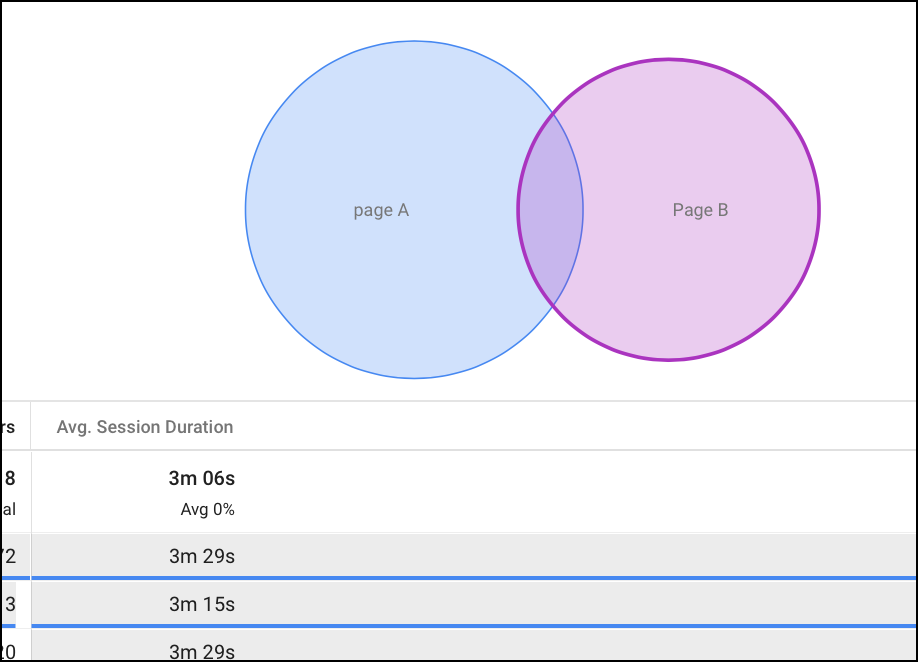
February 24, 2019
Let’s imagine that we need to analyze the number of users who have visited two particular webpages during the last year. We want to know how many of them have visited Page A, how many Page B and how many have visited both pages during the period. Continue reading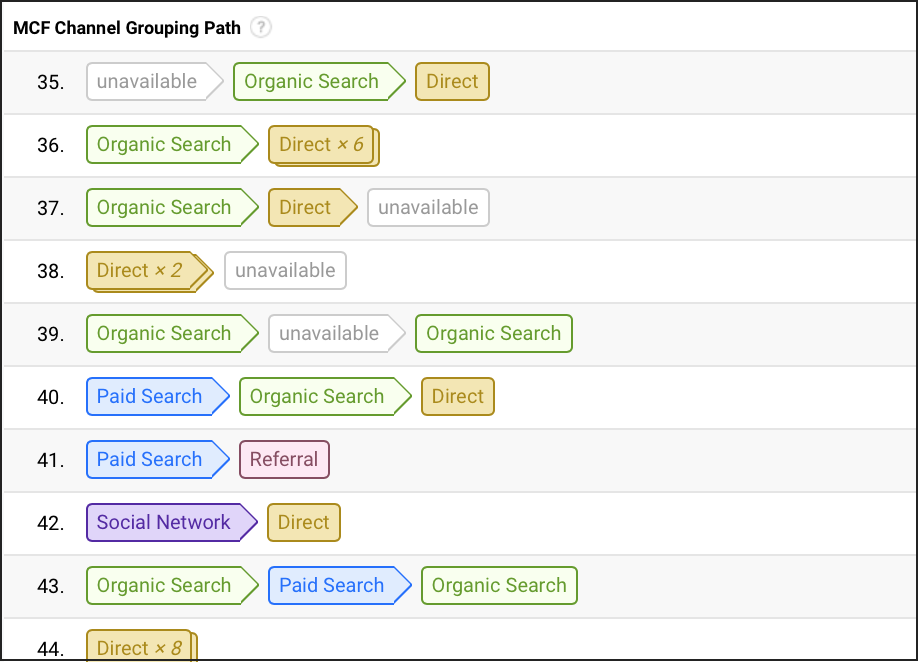
February 5, 2019
Understanding top conversion paths can be a crucial part of the customer journey analysis and an important step towards better understanding of how marketing channels cooperate. It is particularly useful to know the top paths to conversion when planning marketing and advertising budgets. Continue reading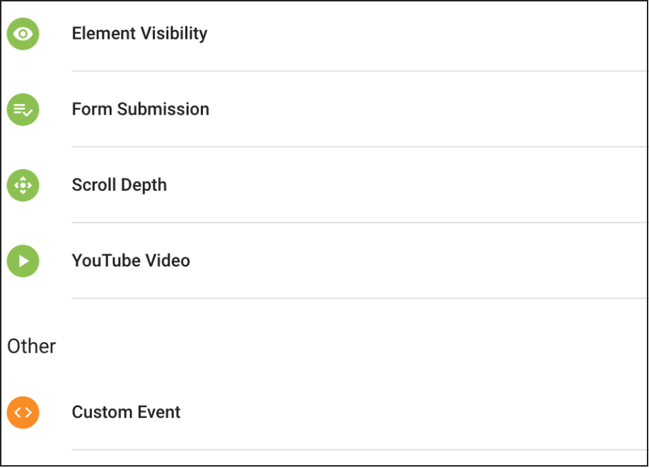
January 24, 2019
Today, we will talk about the custom event trigger using one of our case studies, in which we used Google Tag Manager custom event to track a user’s interaction with a simple promo game on one of our landing pages. Continue reading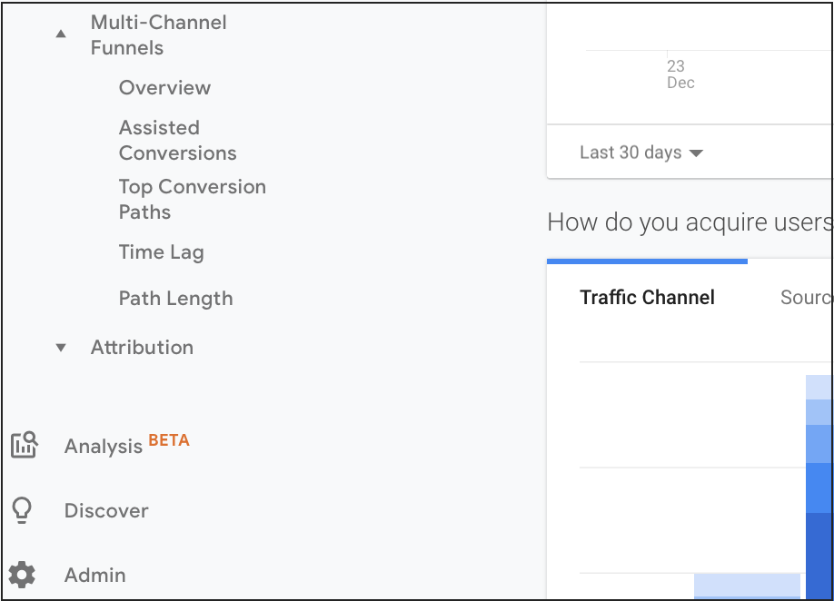
January 19, 2019
Assisted conversions can be a rather valuable metric in a number of cases when there is a need to determine whether a piece of content or an online marketing campaign has contributed to a long-term conversion path. However, an assisted conversions report has a number of limitations. Continue reading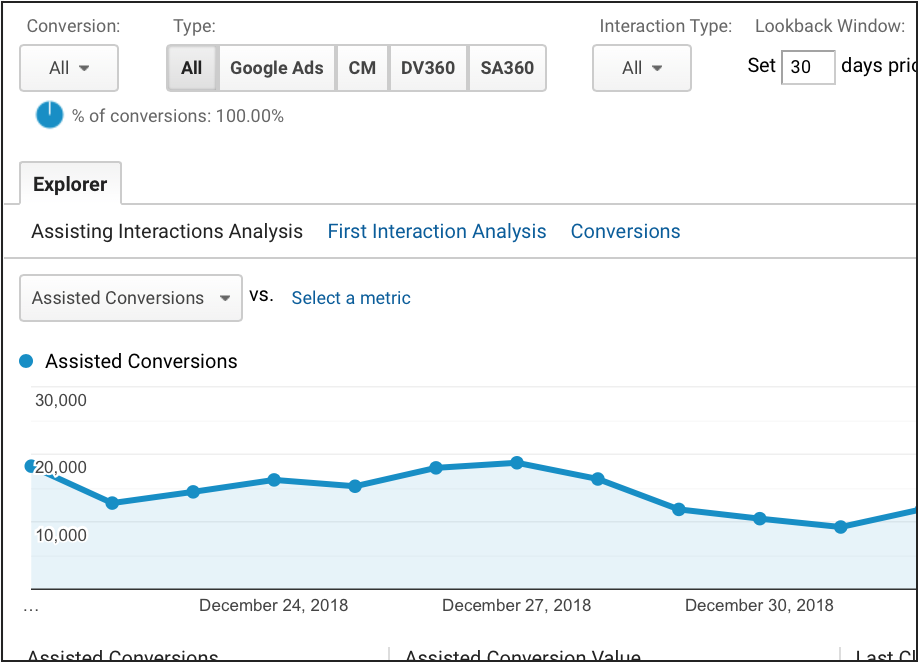
January 9, 2019
In our work we quite often use various Google Analytics reports to evaluate the channels and the campaign’s performance. While most of the standard reports are a perfect place to superficially check the metrics and get some basic information, multi-channel funnels reports are used when there is a need for a little more sophisticated analysis. Continue readingLINKS